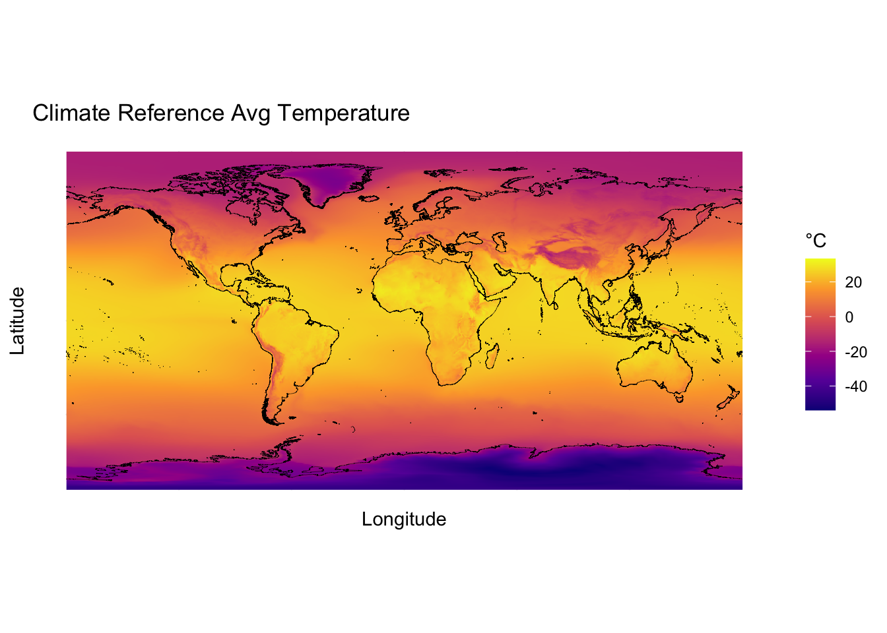
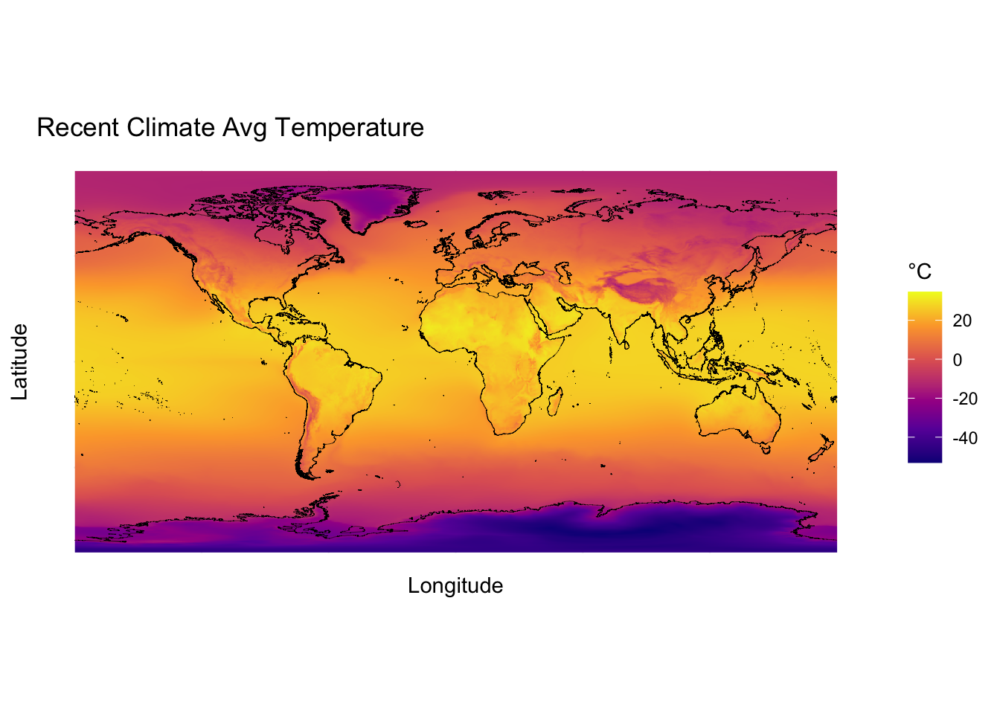
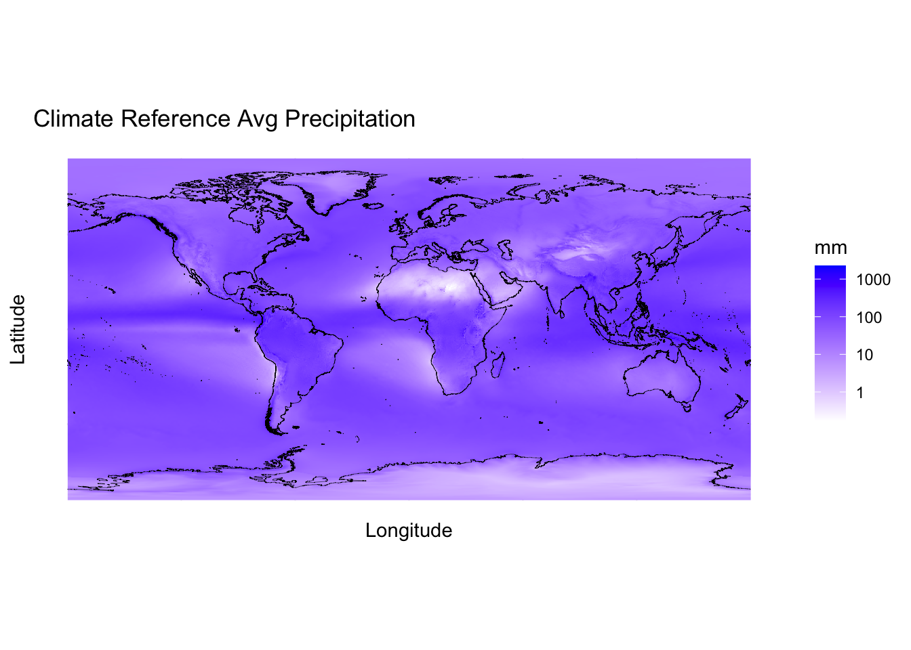
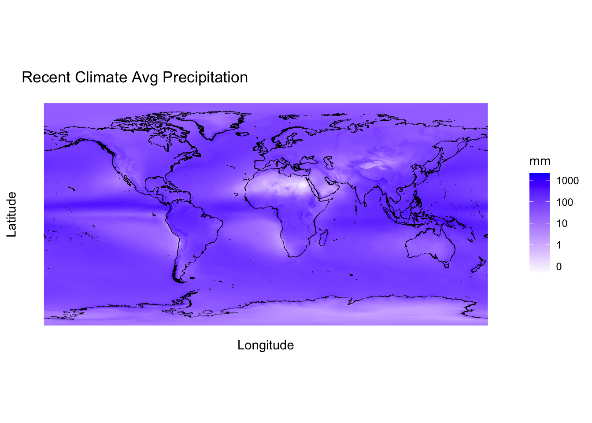
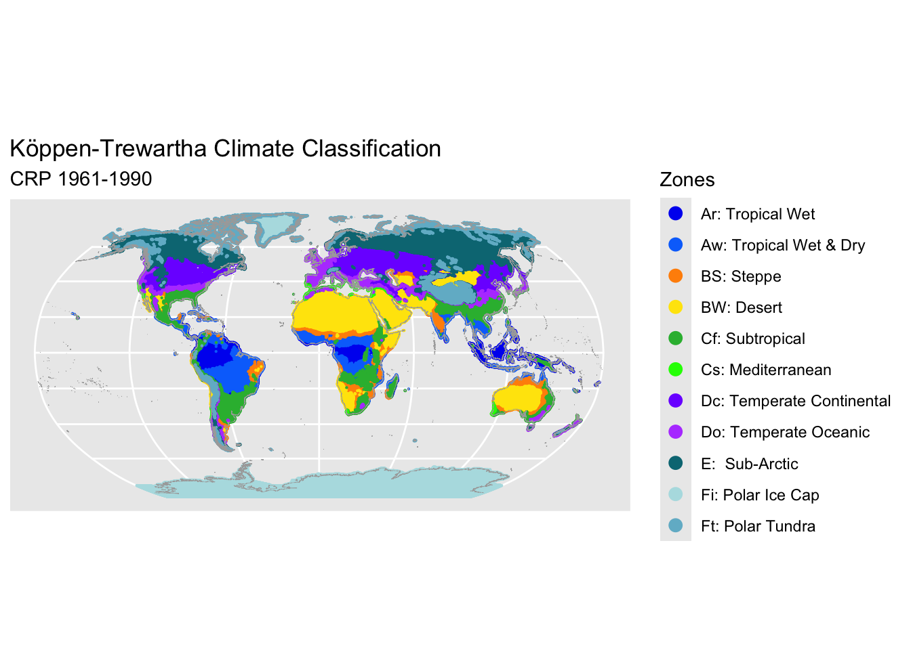
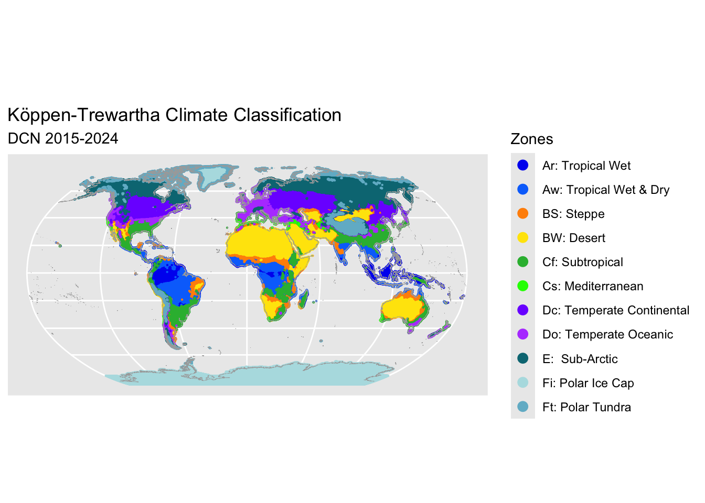
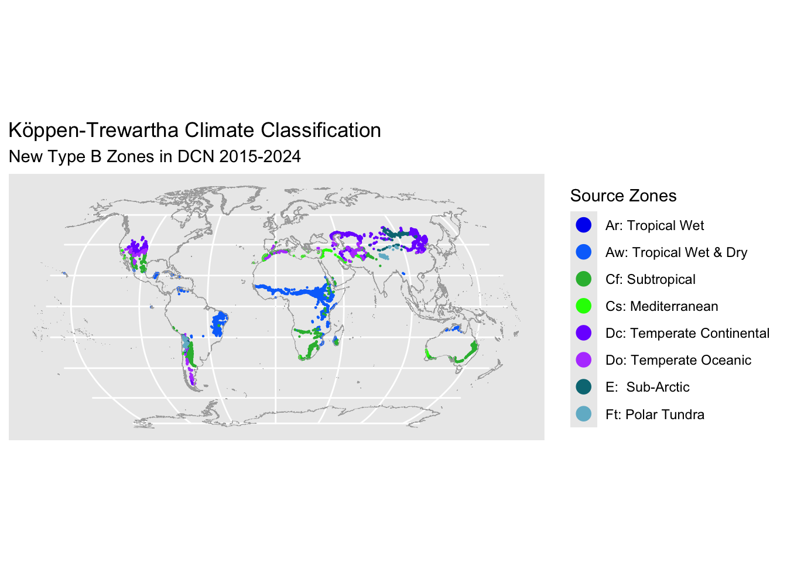
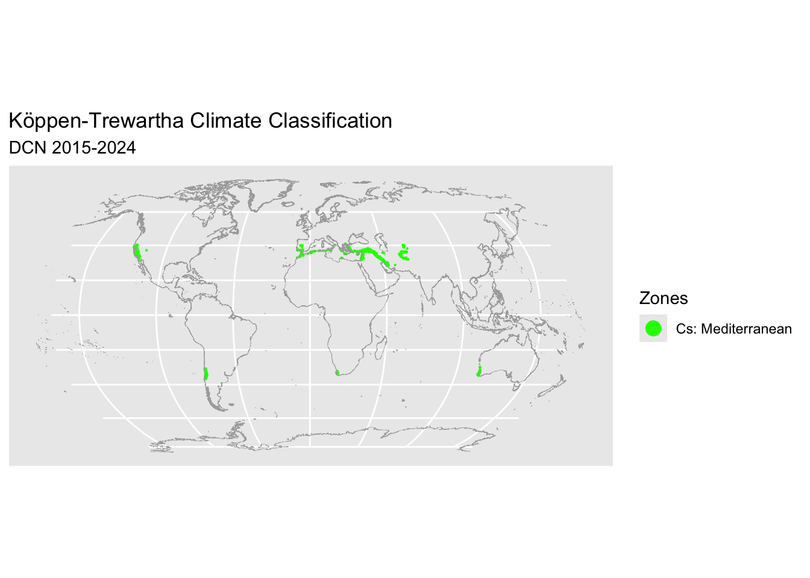

Code
suppressPackageStartupMessages({
library(tidyverse)
library(ecmwfr)
library(tidync)
library(data.table)
library(sf)
library(arrow)
library(units)
library(gt)
library(viridis)
library(scales)
library(rnaturalearth)
})Climate Reference (1961–1990) vs Recent Climate (2015–2024)
suppressPackageStartupMessages({
library(tidyverse)
library(ecmwfr)
library(tidync)
library(data.table)
library(sf)
library(arrow)
library(units)
library(gt)
library(viridis)
library(scales)
library(rnaturalearth)
})classification_method <- "Köppen–Trewartha"
# climate reference period (crp)
crp_beg <- 1961
crp_end <- 1990
crp_lbl <- paste("CRP ", crp_beg, "-", crp_end, sep = "")
# decadal climate normals (dcn)
dcn_beg <- 2015
dcn_end <- 2024
dcn_lbl <- paste("DCN ", dcn_beg, "-", dcn_end, sep = "")
ndy <- data.table(
mth = 1:12,
ndays = as.integer(c(31, 28, 31, 30, 31, 30, 31, 31, 30, 31, 30, 31))
)
rbn_prj <- "ESRI:54030"dir_download <- "data/1-download/"
dir_transform <- "data/2-transform/" zone <- c(
"Ar",
"Aw",
"BW",
"BS",
"Cs",
"Cf",
"Do",
"Dc",
"E",
"Ft",
"Fi"
)
label <- c(
"Ar: Tropical Wet",
"Aw: Tropical Wet & Dry",
"BW: Desert",
"BS: Steppe",
"Cs: Mediterranean",
"Cf: Subtropical",
"Do: Temperate Oceanic",
"Dc: Temperate Continental",
"E: Sub-Arctic",
"Ft: Polar Tundra",
"Fi: Polar Ice Cap"
)
ktc_dict <- data.frame(zone= zone, label=label) ktc_color <- c(
"#040ff0",
"#0474fb",
"#ffe505",
"#ff9005",
"#0eff00",
"#2db83d",
"#b64dff",
"#7c00ff",
"#017783",
"#72b8ce",
"#b4dfe3"
)
ktc_palette <- data.frame(zone= zone, color=ktc_color)fn_download_ERA5_climate_data <- function(pth, var, beg, end) {
yrs <- beg:end
mths <- 1:12
if (var == "t") {
variable_name <- "2m_temperature"
} else if (var == "p") {
variable_name <- "total_precipitation"
}
request <- list(
product_type = "monthly_averaged_reanalysis",
dataset_short_name = "reanalysis-era5-single-levels-monthly-means",
variable = variable_name,
year = yrs,
month = mths,
time = c("00:00"),
format = "netcdf",
download_format = "unarchived",
target = pth
)
# Climate Data Store key
options(keyring_backend = "file") # for ecmwfr to use file instead of mac keychain
wf_get_key() # keyring password required
file <- wf_request(request = request, transfer = TRUE, path = ".")
}
fn_download_climate_period_data <- function(dir, typ, var, beg, end) {
fil <- paste(typ, "-", beg, "-", end, "-", var, ".nc", sep = "")
pth <- paste(dir, fil, sep = "")
if (!file.exists(pth)) {
fn_download_ERA5_climate_data(pth, var, beg, end)
}
}
dir <- dir_download
fn_download_climate_period_data(dir, "crp", "t", crp_beg, crp_end)
fn_download_climate_period_data(dir, "crp", "p", crp_beg, crp_end)
fn_download_climate_period_data(dir, "dcn", "t", dcn_beg, dcn_end)
fn_download_climate_period_data(dir, "dcn", "p", dcn_beg, dcn_end)fn_download_ERA5_land_sea_mask <- function(pth) {
request <- list(
product_type = "reanalysis",
dataset_short_name = "reanalysis-era5-single-levels",
variable = "land_sea_mask",
year = "2000", # any date works; the mask is invariant
month = "01",
day = "01",
time = "00:00",
area = "90/-179.75/-90/180", # N/W/S/E (global)
grid = "0.25/0.25", # ERA5 native grid spacing
format = "netcdf",
download_format = "unarchived",
target = pth
)
# Climate Data Store key
options(keyring_backend = "file") # for ecmwfr to use file instead of mac keychain
wf_get_key() # keyring password required
file <- wf_request(request = request, transfer = TRUE, path = ".")
}
dir <- dir_download
fil <- "land-sea-mask.nc"
pth <- paste(dir, fil, sep = "")
if (!file.exists(pth)) {
fn_download_ERA5_land_sea_mask(pth)
}fn_download_global_coastline <- function() {
coastline_sf <-
ne_download(
scale = 10,
type = "coastline",
category = "physical",
returnclass = "sf"
)
return(coastline_sf)
}
dir <- dir_download
fil <- "global-coastline.gpkg"
pth <- paste(dir, fil, sep = "")
if (!file.exists(pth)) {
coastline_sf <- fn_download_global_coastline()
st_write(coastline_sf, pth, delete_dsn = TRUE, quiet = TRUE)
}fn_transform_land_sea_mask <- function(dir_download) {
fil <- "land-sea-mask.nc"
pth <- paste(dir_download, fil, sep = "")
nc <- tidync(pth)
df <- nc |>
hyper_tibble() |>
as_tibble() |> # tidyverse data frame
rename(lon = longitude, lat = latitude) |>
mutate(
lon = as.numeric(lon),
lat = as.numeric(lat),
lsm = as.integer(round(lsm))
) |>
select(lon, lat, lsm) |> # drop all other columns
arrange(lon, lat)
return(df)
}
dir <- dir_transform
fil <- "land-sea-mask.parquet"
pth <- paste(dir, fil, sep = "")
if (!file.exists(pth)) {
land_sea_mask_df <- fn_transform_land_sea_mask(dir_download)
write_parquet(land_sea_mask_df, pth)
} else {
land_sea_mask_df <- read_parquet(pth)
}fn_transform_global_coastline <- function(dir_download) {
# Create a single coastline multiline, making sure geometries are valid
# (eliminates extra horizontal line on map)
fil <- "global-coastline.gpkg"
pth <- paste(dir_download, fil, sep = "")
coastline_sf <- st_read(pth)
coastline_sf <- coastline_sf |>
select(geom) |>
mutate(id = "world") |>
group_by(id) |>
st_make_valid() |>
summarise()
return(coastline_sf)
}
dir <- dir_transform
fil <- "global-coastline.gpkg"
pth <- paste(dir, fil, sep = "")
if (!file.exists(pth)) {
coastline_sf <- fn_transform_global_coastline(dir_download)
st_write(coastline_sf, pth, delete_dsn = TRUE, quiet = TRUE)
} else {
coastline_sf <- st_read(pth)
}Reading layer `global-coastline' from data source
`/Users/rkforest/climate-classification-with-r/data/2-transform/global-coastline.gpkg'
using driver `GPKG'
Simple feature collection with 1 feature and 1 field
Geometry type: MULTILINESTRING
Dimension: XY
Bounding box: xmin: -180 ymin: -85.22194 xmax: 180 ymax: 83.6341
Geodetic CRS: WGS 84fn_read_nc_chunk <- function(dt, var, vnm, start, stop) {
setnames(dt, old = "longitude", new = "lon")
setnames(dt, old = "latitude", new = "lat")
setnames(dt, old = vnm, new = var)
dt[, lon := as.numeric(lon)]
dt[, lat := as.numeric(lat)]
dt[lon > 180, lon := lon - 360]
dt[, mth := as.integer(substr(valid_time, 6, 7))]
setDT(dt)
if (var == "t") {
drop <- setdiff(names(dt), c("lon", "lat", "mth", "t"))
dt[, (drop) := NULL]
dt <- dt[, .(t = sum(t, na.rm = TRUE)), by = .(lon, lat, mth)]
} else {
drop <- setdiff(names(dt), c("lon", "lat", "mth", "p"))
dt[, (drop) := NULL]
dt <- dt[, .(p = sum(p, na.rm = TRUE)), by = .(lon, lat, mth)]
}
setDT(dt)
gc()
return(dt)
}fn_read_nc <- function(pth, var, vnm) {
nc <- tidync(pth)
dims <- nc |> activate(vnm) |> hyper_dims()
ntime <- dims |> filter(name == "valid_time") |> pull(length)
chunk <- 60L
print(paste("chunk size ", chunk))
for (start in seq(1L, ntime, by = chunk)) {
chnk_beg <- Sys.time()
stop <- min(start + chunk - 1L, ntime)
chunk_dt <- nc |>
hyper_filter(valid_time = index %in% start:stop) |>
hyper_tibble(select_var = vnm) |>
as.data.table()
chunk_grp_dt <- fn_read_nc_chunk(chunk_dt, var, vnm, start, stop)
fn2_pt2_beg = Sys.time()
if (start == 1L) {
dt <- chunk_grp_dt
} else {
dt <- rbindlist(list(dt, chunk_grp_dt))
# group
if (var == "t") {
dt <- dt[, .(t = sum(t, na.rm = TRUE)), by = .(lon, lat, mth)]
} else {
dt <- dt[, .(p = sum(p, na.rm = TRUE)), by = .(lon, lat, mth)]
}
}
chnk_end <- Sys.time()
print(paste("chunk time: ", (chnk_end - chnk_beg)))
}
return(dt)
}fn_get_t_data <- function(dir, typ, beg, end) {
var <- "t"
vnm <- "t2m"
fil <- paste(typ, "-", beg, "-", end, "-", var, ".nc", sep = "")
pth <- paste(dir, fil, sep = "")
t_dt <- fn_read_nc(pth, var, vnm)
return(t_dt)
}fn_get_p_data <- function(dir, typ, beg, end, ndy) {
var <- "p"
vnm <- "tp"
fil <- paste(typ, "-", beg, "-", end, "-", var, ".nc", sep = "")
pth <- paste(dir, fil, sep = "")
p_dt <- fn_read_nc(pth, var, vnm)
return(p_dt)
}fn_transform_t_data <- function(t_dt, typ) {
yrs <- ifelse(typ == "crp", 30, 10)
# sort, convert to period avg, convert units
setorder(t_dt, lon, lat, mth)
setDT(t_dt)
# convert from sum to avg
t_dt[, t := t / yrs]
# convert from kelvin to celsius
t_dt[, t := t - 273.15]
# pivot
t_wide_dt <- t_dt |>
pivot_wider(
names_from = c(mth),
values_from = c("t"),
names_prefix = "t",
names_sep = "" # no underscore in new col names
)
# add stats
tcols <- paste0("t", 1:12)
t_stats_dt <- t_wide_dt |>
mutate(
tAvg = (t1 + t2 + t3 + t4 + t5 + t6 + t7 + t8 + t9 + t10 + t11 + t12) /
12,
tMax = pmax(t1, t2, t3, t4, t5, t6, t7, t8, t9, t10, t11, t12),
tMin = pmin(t1, t2, t3, t4, t5, t6, t7, t8, t9, t10, t11, t12),
tOctMar = (t1 + t2 + t3 + t10 + t11 + t12) / 6,
tAprSep = (t4 + t5 + t6 + t7 + t8 + t9) / 6,
tG10 = rowSums(across(all_of(tcols), ~ .x >= 10))
)
t_stats_df <- t_stats_dt |>
select(-t1, -t2, -t3, -t4, -t5, -t6, -t7, -t8, -t9, -t10, -t11, -t12)
return(t_stats_df)
}fn_transform_p_data <- function(p_dt, typ) {
yrs <- ifelse(typ == "crp", 30, 10)
# sort, convert to period avg, convert units
setorder(p_dt, lon, lat, mth)
setDT(p_dt)
# convert from sum to avg
p_dt[, p := p / yrs]
# add number of days using lookup table
p_dt[ndy, ndy := i.ndays, on = "mth"]
p_dt[, p := p * ndy * 1000]
p_dt[, ndy := NULL]
# pivot
p_wide_dt <- p_dt |>
pivot_wider(
names_from = c(mth),
values_from = c("p"),
names_prefix = "p",
names_sep = "" # no underscore in new col names
)
# add stats
pcols <- paste0("p", 1:12)
p_stats_dt <- p_wide_dt |>
mutate(
pTot = (p1 + p2 + p3 + p4 + p5 + p6 + p7 + p8 + p9 + p10 + p11 + p12),
pMax = pmax(p1, p2, p3, p4, p5, p6, p7, p8, p9, p10, p11, p12),
pMin = pmin(p1, p2, p3, p4, p5, p6, p7, p8, p9, p10, p11, p12),
pAvg = pTot / 12,
pOctMar = (p1 + p2 + p3 + p10 + p11 + p12),
pAprSep = (p4 + p5 + p6 + p7 + p8 + p9),
pMinOctMar = pmin(p10, p11, p12, p1, p2, p3),
pMaxOctMar = pmax(p10, p11, p12, p1, p2, p3),
pMinAprSep = pmin(p4, p5, p6, p7, p8, p9),
pMaxAprSep = pmax(p4, p5, p6, p7, p8, p9),
pL60 = rowSums(across(all_of(pcols), ~ .x < 60))
)
p_stats_df <- p_stats_dt |>
select(-p1, -p2, -p3, -p4, -p5, -p6, -p7, -p8, -p9, -p10, -p11, -p12)
return(p_stats_df)
}fn_calc_area <- function(df) {
earth_radius_km <- 6371
lat_grid_degrees <- 0.25
lon_grid_degrees <- 0.25
area_df <- df |>
mutate(
lat_radians = lat * pi / 180,
lat_grid_radians = lat_grid_degrees * pi / 180,
lon_grid_radians = lon_grid_degrees * pi / 180,
# cell area in km^2
area = (earth_radius_km^2 *
lon_grid_radians *
(sin(lat_radians + lat_grid_radians / 2) -
sin(lat_radians - lat_grid_radians / 2))) /
1e6
) |>
select(-lat_radians, -lat_grid_radians, -lon_grid_radians) |>
select(lat, lon, area, lsm, everything())
return(area_df)
}typ <- "crp"
dir <- dir_transform
pth <- paste(dir_transform, "climate-stats-",typ,".parquet", sep = "")
# only need to transform if stats file doesn't exist
if (!file.exists(pth)) {
t_dt <- fn_get_t_data(dir_download, typ, crp_beg, crp_end)
p_dt <- fn_get_p_data(dir_download, typ, crp_beg, crp_end, ndy)
t_stats_df <- fn_transform_t_data(t_dt, typ)
p_stats_df <- fn_transform_p_data(p_dt, typ)
j1_df <- inner_join(t_stats_df, p_stats_df, by = c("lon", "lat"))
j2_df <- inner_join(j1_df, land_sea_mask_df, by = c("lon", "lat"))
area_df <- fn_calc_area(j2_df)
write_parquet(area_df, pth)
}typ <- "dcn"
dir <- dir_transform
pth <- paste(dir_transform, "climate-stats-",typ,".parquet", sep = "")
# only need to transform if stats file doesn't exist
if (!file.exists(pth)) {
t_dt <- fn_get_t_data(dir_download, typ, dcn_beg, dcn_end)
p_dt <- fn_get_p_data(dir_download, typ, dcn_beg, dcn_end, ndy)
t_stats_df <- fn_transform_t_data(t_dt, typ)
p_stats_df <- fn_transform_p_data(p_dt, typ)
j1_df <- inner_join(t_stats_df, p_stats_df, by = c("lon", "lat"))
j2_df <- inner_join(j1_df, land_sea_mask_df, by = c("lon", "lat"))
area_df <- fn_calc_area(j2_df)
write_parquet(area_df, pth)
}typ <- "crp"
dir <- dir_transform
pth <- paste(dir_transform, "climate-stats-",typ,".parquet", sep = "")
c_df <- read_parquet(pth)
typ <- "dcn"
dir <- dir_transform
pth <- paste(dir_transform, "climate-stats-",typ,".parquet", sep = "")
d_df <- read_parquet(pth)xt1 <- ggplot(c_df) +
geom_raster(aes(x = lon, y = lat, fill = tAvg)) +
geom_sf(data = coastline_sf, color = "black", linewidth = 0.1) +
scale_fill_viridis_c(option = "plasma") +
coord_sf() +
labs(
title = "Climate Reference Avg Temperature",
fill = "°C",
x = "Longitude",
y = "Latitude"
) +
theme_minimal()
xt1
xt2 <- ggplot(d_df) +
geom_raster(aes(x = lon, y = lat, fill = tAvg)) +
geom_sf(data = coastline_sf, color = "black", linewidth = 0.1) +
scale_fill_viridis_c(option = "plasma") +
coord_sf() +
labs(
title = "Recent Climate Avg Temperature",
fill = "°C",
x = "Longitude",
y = "Latitude"
) +
theme_minimal()
xt2
xp1 <- ggplot(c_df) +
geom_raster(aes(x = lon, y = lat, fill = pAvg)) +
geom_sf(data = coastline_sf, color = "black", linewidth = 0.1) +
scale_fill_gradient(
trans = "log10",
low = "white", high = "blue",
labels = function(x) round(x)) +
coord_sf() +
labs(
title = "Climate Reference Avg Precipitation",
fill = "mm",
x = "Longitude",
y = "Latitude"
) +
theme_minimal()
xp1
xp2 <- ggplot(d_df) +
geom_raster(aes(x = lon, y = lat, fill = pAvg)) +
geom_sf(data = coastline_sf, color = "black", linewidth = 0.1) +
scale_fill_gradient(
trans = "log10",
low = "white", high = "blue",
labels = function(x) round(x)) +
coord_sf() +
labs(
title = "Recent Climate Avg Precipitation",
fill = "mm",
x = "Longitude",
y = "Latitude"
) +
theme_minimal()
xp2
fn_classify_ktc <- function(df) {
# Step 1: Add seasonal precip stats (Summer/Winter) based on hemisphere
# Summer: high sun 6 months (SH: Oct–Mar, NH: Apr–Sep)
# Winter: low sun 6 months (NH: Oct–Mar, SH: Apr–Sep)
df <- df |>
mutate(
pST = case_when(lat >= 0 ~ pAprSep, TRUE ~ pOctMar),
pWT = case_when(lat >= 0 ~ pOctMar, TRUE ~ pAprSep),
pMnST = case_when(lat >= 0 ~ pMinAprSep, TRUE ~ pMinOctMar),
pMxST = case_when(lat >= 0 ~ pMaxAprSep, TRUE ~ pMaxOctMar),
pMnWT = case_when(lat >= 0 ~ pMinOctMar, TRUE ~ pMinAprSep),
pMxWT = case_when(lat >= 0 ~ pMaxOctMar, TRUE ~ pMaxAprSep)
)
# Step 2: Calculate Aridity threshold
df <- df |>
mutate(
aThrT = case_when(
pTot != 0 ~ (10 * (tAvg - 10)) + (3 * (pST / pTot) * 100),
TRUE ~ 10 * (tAvg - 10)
)
)
# Step 3: Assign Primary Group
df <- df |>
mutate(
z1 = case_when(
tMax < 10 ~ "F",
pTot < (aThrT * 2) ~ "B",
tMin >= 18 ~ "A",
tG10 >= 8 ~ "C",
tG10 >= 4 ~ "D",
tG10 >= 1 ~ "E",
TRUE ~ "X"
),
zn = ""
)
# Step 4: Assign secondary group
df <- df |>
mutate(
z2 = case_when(
z1 == "A" & pL60 <= 2 ~ "r",
z1 == "A" ~ "w",
z1 == "B" & pTot < aThrT ~ "W",
z1 == "B" ~ "S",
z1 == "C" & pWT >= pST * 3 & pMin < 30 & pTot < 890 ~ "s",
z1 == "C" ~ "f",
z1 == "D" & tMin > 0 ~ "o",
z1 == "D" ~ "c",
z1 == "F" & tMax > 0 ~ "t",
z1 == "F" ~ "i",
TRUE ~ ""
),
zn = paste(z1, z2, sep = "")
)
return(df)
}ktc_c_df <- fn_classify_ktc(c_df)
ktc_c_df <- ktc_c_df |> select(lon, lat, zn, area, lsm)
ktc_c_sf <- st_as_sf(ktc_c_df, coords = c("lon", "lat"), crs = 4326)
ktc_d_df <- fn_classify_ktc(d_df)
ktc_d_df <- ktc_d_df |> select(lon, lat, zn, area, lsm)
ktc_d_sf <- st_as_sf(ktc_d_df, coords = c("lon", "lat"), crs = 4326)
# combine areas by crp and dcn
ktc_cd_sf <- ktc_c_sf
ktc_cd_sf <- ktc_cd_sf |> rename(czn = zn)
ktc_cd_sf$dzn <- ktc_d_sf$zn
ktc_grp_geom_sf <- ktc_cd_sf |>
filter(lsm==1) |>
summarise(
geometry = st_combine(geometry),
mkm = sum(area),
.by = c(czn, dzn)
) |>
mutate(cz1 = substr(czn, 1, 1)) |>
mutate(dz1 = substr(dzn, 1, 1)) |>
mutate(pct = round(mkm / sum(mkm) * 100, 3)) |>
select(czn, cz1, dzn, dz1, mkm, pct, geometry) |>
arrange(czn, dzn)
ktc_grp_geom_sf <- st_set_crs(ktc_grp_geom_sf, 4326)::: {.cell}
# fn_add_seasonal_stats_K <- function(dt) {
# # Summer in Koppen is defined as warmer 6 month period of Oct-Mar or Apr-Sep
# # Winter in Koppen is defined as cooler 6 month period of Oct-Mar or Apr-Sep
# dt <- dt |>
# mutate(
# pSK = case_when(
# tAprSep >= tOctMar ~ pAprSep,
# TRUE ~ pOctMar
# ),
# pWK = case_when(
# tAprSep < tOctMar ~ pAprSep,
# TRUE ~ pOctMar
# ),
# pMnSK = case_when(
# tAprSep >= tOctMar ~ pmin(p4, p5, p6, p7, p8, p9),
# TRUE ~ pmin(p1, p2, p3, p10, p11, p12),
# ),
# pMxSK = case_when(
# tAprSep >= tOctMar ~ pmax(p4, p5, p6, p7, p8, p9),
# TRUE ~ pmax(p1, p2, p3, p10, p11, p12),
# ),
# pMnWK = case_when(
# tAprSep >= tOctMar ~ pmin(p1, p2, p3, p10, p11, p12),
# TRUE ~ pmin(p4, p5, p6, p7, p8, p9),
# ),
# pMxWK = case_when(
# tAprSep >= tOctMar ~ pmax(p1, p2, p3, p10, p11, p12),
# TRUE ~ pmax(p4, p5, p6, p7, p8, p9),
# ),
# )
# return(dt)
# }:::
# fn_add_precipitation_threshhold_K <- function(dt) {
# # For Koppen, the precipitation threshold in millimeters is determined by:
# # multiplying the average annual temperature in Celsius by 20, then adding:
# # 280 if 70% or more of the total precipitation is in the spring and summer months (April–September in the Northern Hemisphere, or October–March in the Southern), or
# # 140 if 30%–70% of the total precipitation is received during the spring and summer, or
# # 0 if less than 30% of the total precipitation is received during the spring and summer.
# dt <- dt |>
# mutate(
# pThrK = case_when(
# pSK / pTot >= 0.7 ~ tAvg * 20 + 280,
# pSK / pTot >= 0.3 ~ tAvg * 20 + 140,
# TRUE ~ tAvg * 20
# )
# )
# return(dt)
# }# fn_kcc_letter1 <- function(dt) {
# dt <- dt |>
# mutate(
# k1 = case_when(
# tMax < 10 ~ "E",
# pTot < pThrK ~ "B",
# tMin > 18 ~ "A",
# tMax > 10 & tMin >= -3 ~ "C",
# tMax > 10 & tMin <= -3 ~ "D",
# TRUE ~ "X"
# ),
# k2 = "",
# k3 = "",
# )
# return(dt)
# }# fn_kcc_letter2 <- function(dt) {
# dt <- dt |>
# mutate(
# k2 = case_when(
# k1 == "A" & pMin >= 60 ~ "f",
# k1 == "A" & pMin < 60 & pMin >= (100 - pTot / 25) ~ "m",
# k1 == "A" & pMin < (100 - pTot / 25) & pWK > pSK ~ "w",
# k1 == "A" & pMin < (100 - pTot / 25) & pSK > pWK ~ "s",
# k1 == "B" & pTot <= (pThrK * 0.5) ~ "W",
# k1 == "B" & pTot <= pThrK ~ "S",
# k1 == "C" & pMnSK < 40 & pMxWK >= pMnSK * 3 ~ "s",
# k1 == "C" & pMxSK >= pMnWK * 10 ~ "w",
# k1 == "C" ~ "f",
# k1 == "D" & pMnSK < 40 & pMxWK >= pMnSK * 3 ~ "s",
# k1 == "D" & pMxSK >= pMnWK * 10 ~ "w",
# k1 == "D" ~ "f",
# k1 == "E" & tMax > 0 ~ "T",
# k1 == "E" & tMax <= 0 ~ "F",
# TRUE ~ " "
# ),
# )
# return(dt)
# }# fn_kcc_letter3 <- function(dt) {
# dt <- dt |>
# mutate(
# k3 = case_when(
# k1 == "B" & tAvg >= 18 ~ "h",
# k1 == "B" & tAvg < 18 ~ "k",
# k1 == "C" & tMax >= 22 ~ "a",
# k1 == "C" & tG10 >= 4 ~ "b",
# k1 == "C" ~ "c",
# k1 == "D" & tMax >= 22 ~ "a",
# k1 == "D" & tG10 >= 4 ~ "b",
# k1 == "D" & tMin < -38 ~ "d",
# k1 == "D" ~ "c",
# TRUE ~ ""
# ),
# k12 = paste(k1, k2, sep = ""),
# k123 = paste(k1, k2, k3, sep = "")
# )
# return(dt)
# }# fn_kcc <- function(dt) {
# dt <- fn_add_seasonal_stats_K(dt)
# dt <- fn_add_precipitation_threshhold_K(dt)
# dt <- fn_kcc_letter1(dt)
# dt <- fn_kcc_letter2(dt)
# dt <- fn_kcc_letter3(dt)
# return(dt)
# }
# fn_kcc <- function(dt) {
# dt <- fn_add_seasonal_stats_K(dt)
# dt <- fn_add_precipitation_threshhold_K(dt)
# dt <- fn_kcc_letter1(dt)
# dt <- fn_kcc_letter2(dt)
# dt <- fn_kcc_letter3(dt)
# return(dt)
# }# Build CRP and DCN aggregates from grouped land geometries
ktc_crp_df <- ktc_grp_geom_sf |>
st_drop_geometry() |>
select(czn, cz1, mkm, pct) |>
summarize(mkm = sum(mkm), pct = sum(pct), .by = c(czn, cz1)) |>
mutate(period = "crp") |>
rename(zone = czn, z1 = cz1) |>
arrange(zone)
ktc_dcn_df <- ktc_grp_geom_sf |>
st_drop_geometry() |>
select(dzn, dz1, mkm, pct) |>
summarize(mkm = sum(mkm), pct = sum(pct), .by = c(dzn, dz1)) |>
mutate(period = "dcn") |>
rename(zone = dzn, z1 = dz1) |>
arrange(zone)
# Side-by-side comparison + deltas
ktc_diff_df <- ktc_crp_df |>
select(zone, mkm, pct) |>
rename(cmkm = mkm, cpct = pct)
ktc_diff_df$dmkm <- ktc_dcn_df$mkm
ktc_diff_df$dpct <- ktc_dcn_df$pct
ktc_diff_df <- ktc_diff_df |>
mutate(
xmkm = dmkm - cmkm,
xpct = round(dpct - cpct, 2)
) |>
select(zone, cmkm, dmkm, xmkm, cpct, dpct, xpct)
ktc_diff_df <- ktc_diff_df |>
left_join(ktc_dict, by = "zone") |>
select(label, cmkm, dmkm, xmkm, cpct, dpct, xpct)
ktc_diff_gt <- gt(ktc_diff_df)ktc_tbl1 <- ktc_diff_gt |>
tab_header(
title = "Summary of Köppen-Trewartha Climate Zone Changes",
#subtitle = paste(crp_lbl, "vs", dcn_lbl)
) |>
tab_spanner(
label = "Area (Mkm²)",
columns = c(cmkm, dmkm, xmkm)
) |>
tab_spanner(
label = "Earth Land Area %",
columns = c(cpct, dpct, xpct)
) |>
cols_label(
cmkm = "CRP",
dmkm = "DCN",
xmkm = "Chg",
cpct = "CRP",
dpct = "DCN",
xpct = "Chg"
) |>
fmt_number(columns = c(cmkm, dmkm, xmkm), decimals = 1) |>
fmt_number(columns = c(cpct, dpct, xpct), decimals = 2) |>
grand_summary_rows(
columns = c(cmkm, dmkm, xmkm, cpct, dpct, xpct),
fns = list("Total" = ~ sum(.)),
fmt = list(~ fmt_number(.x, decimals = 2))
) |>
tab_footnote(
footnote = paste("CRP: Climate Reference Period ", crp_beg, "-", crp_end, sep = ""),
locations = cells_column_labels(columns = c(cmkm, cpct))
) |>
tab_footnote(
footnote = paste("DCN: Decadal Climate Normals ", dcn_beg, "-", dcn_end, sep = ""),
locations = cells_column_labels(columns = c(dmkm, dpct))
)
ktc_tbl1 | Summary of Köppen-Trewartha Climate Zone Changes | |||||||
|---|---|---|---|---|---|---|---|
| label |
Area (Mkm²)
|
Earth Land Area %
|
|||||
| CRP1 | DCN2 | Chg | CRP1 | DCN2 | Chg | ||
| Ar: Tropical Wet | 11.1 | 9.1 | −2.0 | 7.52 | 6.15 | −1.37 | |
| Aw: Tropical Wet & Dry | 16.4 | 18.5 | 2.1 | 11.15 | 12.58 | 1.43 | |
| BS: Steppe | 13.5 | 14.4 | 0.9 | 9.18 | 9.81 | 0.63 | |
| BW: Desert | 23.6 | 26.1 | 2.5 | 16.03 | 17.74 | 1.71 | |
| Cf: Subtropical | 13.8 | 13.3 | −0.5 | 9.35 | 9.02 | −0.33 | |
| Cs: Mediterranean | 0.7 | 0.7 | −0.1 | 0.51 | 0.45 | −0.06 | |
| Dc: Temperate Continental | 18.9 | 19.7 | 0.8 | 12.80 | 13.36 | 0.55 | |
| Do: Temperate Oceanic | 4.3 | 5.0 | 0.7 | 2.94 | 3.42 | 0.48 | |
| E: Sub-Arctic | 21.3 | 19.2 | −2.1 | 14.49 | 13.04 | −1.45 | |
| Fi: Polar Ice Cap | 15.8 | 15.5 | −0.3 | 10.70 | 10.50 | −0.20 | |
| Ft: Polar Tundra | 7.8 | 5.8 | −2.1 | 5.32 | 3.93 | −1.39 | |
| Total | — | 147.21 | 147.21 | 0.00 | 100.00 | 100.00 | 0.00 |
| 1 CRP: Climate Reference Period 1961-1990 | |||||||
| 2 DCN: Decadal Climate Normals 2015-2024 | |||||||
plot_data <- ktc_grp_geom_sf |>
select(czn) |>
rename(zone = czn)
p1 <- ggplot(plot_data) +
geom_sf(aes(color = zone), size = 0.1) +
scale_color_manual(
values = setNames(ktc_palette$color, ktc_palette$zone),
labels = setNames(ktc_dict$label, ktc_dict$zone)
) +
geom_sf(
data = coastline_sf,
color = "darkgrey",
linewidth = 0.1
) +
coord_sf(crs = rbn_prj) +
labs(
title = "Köppen-Trewartha Climate Classification",
subtitle = crp_lbl,
color = "Zones"
) +
guides(
color = guide_legend(
override.aes = list(
size = 3 # legend point size only
)
)
)
p1
plot_data <- ktc_grp_geom_sf |>
select(dzn) |>
rename(zone = dzn)
p2 <- ggplot(plot_data) +
geom_sf(aes(color = zone), size = 0.1) +
scale_color_manual(
values = setNames(ktc_palette$color, ktc_palette$zone),
labels = setNames(ktc_dict$label, ktc_dict$zone)
) +
geom_sf(
data = coastline_sf,
color = "darkgrey",
linewidth = 0.1
) +
coord_sf(crs = rbn_prj) +
labs(
title = "Köppen-Trewartha Climate Classification",
subtitle = dcn_lbl,
color = "Zones"
) +
guides(
color = guide_legend(
override.aes = list(
size = 3 # legend point size only
)
)
)
p2
plot_z1 <- "B"
plot_data <- ktc_grp_geom_sf |>
filter(cz1 != dz1) |>
filter(dz1 == plot_z1) |>
select(czn) |>
rename(zone = czn)
p3 <- ggplot(plot_data) +
geom_sf(aes(color = zone), size = 0.1) +
scale_color_manual(
values = setNames(ktc_palette$color, ktc_palette$zone),
labels = setNames(ktc_dict$label, ktc_dict$zone)
) +
geom_sf(
data = coastline_sf,
color = "darkgrey",
linewidth = 0.1
) +
coord_sf(crs = rbn_prj) +
labs(
title = "Köppen-Trewartha Climate Classification",
subtitle = paste0(
"New Type ",
plot_z1,
" Zones in ",
dcn_lbl
),
color = "Source Zones"
) +
guides(
color = guide_legend(
override.aes = list(
size = 4 # legend point size only
)
)
)
p3
plot_zn <- "Cs"
plot_data <- ktc_grp_geom_sf |>
filter(dzn == plot_zn) |>
rename(zone = dzn)
p4 <- ggplot(plot_data) +
geom_sf(aes(color = zone), size = 0.1) +
scale_color_manual(
values = setNames(ktc_palette$color, ktc_palette$zone),
labels = setNames(ktc_dict$label, ktc_dict$zone)
) +
geom_sf(
data = coastline_sf,
color = "darkgrey",
linewidth = 0.1
) +
coord_sf(crs = rbn_prj) +
labs(
title = "Köppen-Trewartha Climate Classification",
subtitle = dcn_lbl,
color = "Zones"
) +
guides(
color = guide_legend(
override.aes = list(
size = 4 # legend point size only
)
)
)
p4